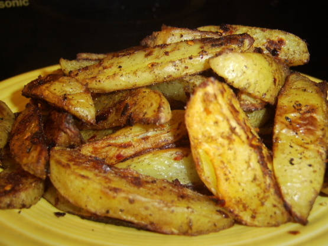

Ingredients:
4 large potatoes (2 lbs)
1892.72 ml ice water
4.92 ml garlic powder
4.92 ml onion powder
1 1/53 ml salt
4.92 ml white pepper
1 1/53 ml allspice
4.92 ml hot pepper flakes
14.79 ml vegetable oil
Instructions:
Scrub potatoes and cut into long 1/2-inch strips.
Place potato strips into ice water, cover, and chill for 1 hour or longer.
Remove potatoes and dry strips thoroughly.
Place garlic powder, onion powder, salt, white pepper, allspice, and pepper flakes in a plastic bag.
Toss potatoes in spice mixture.
Brush potatoes with oil.
Place potatoes in nonstick shallow baking pan.
Cover with aluminum foil and place in 475°F oven for 15 minutes.
Remove foil and continue baking uncovered for an additional 15 to 20 minutes or until golden brown.
Turn fries occasionally to brown on all sides.
http://recipe-finder.com/recipe/17545864604054387565
Matt Stillwell
11 - 10 - 2015